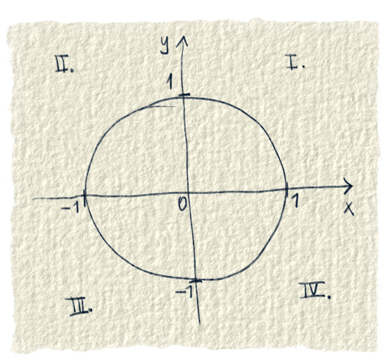

Jednotková kružnica je kružnica, ktorej stred je v začiatku súradnicovej sústavy (v bode 0,0) a jej polomer je jedna. Polomer nie je v žiadnych jednotkách. Nie je to 1 cm, ani 1 m, ani 1 km. Je to skrátka iba 1. Súradnicová sústava rozdeľuje plochu na štyri časti. Tieto časti voláme prvý kvadrant, druhý kvadrant, tretí kvadrant a štvrtý kvadrant. Zvykne sa to označovať rímskymi číslami.
Niektoré pramene uvádzajú, že jednotkovú kružnicu poznali už v starom Babylone. Používali ju na to, aby si pre daný uhol odmerali pomery strán. Potom sa zjavila až v knihe Introductio in analysin infinitorum od Leonarda Eulera [1]. To bolo tak v prvej polovici 18. storočia. Použil ju na znázornenie rôznych vecí, a na to isté ju používame aj dnes. Dajú sa na nej zobraziť napríklad goniometrické funkcie alebo komplexné čísla. Keď sú veci na nej prehľadne nakreslené, hneď sa s tým ľuďom lepšie počíta.

Obr. 1.: Jednotková kružnica
Zdroje
[1] When did mathematicians invent the unit circle to extend the trig functions? https://hsm.stackexchange.com/questions/11343/when-did-mathematicians-invent-the-unit-circle-to-extend-the-trig-functions